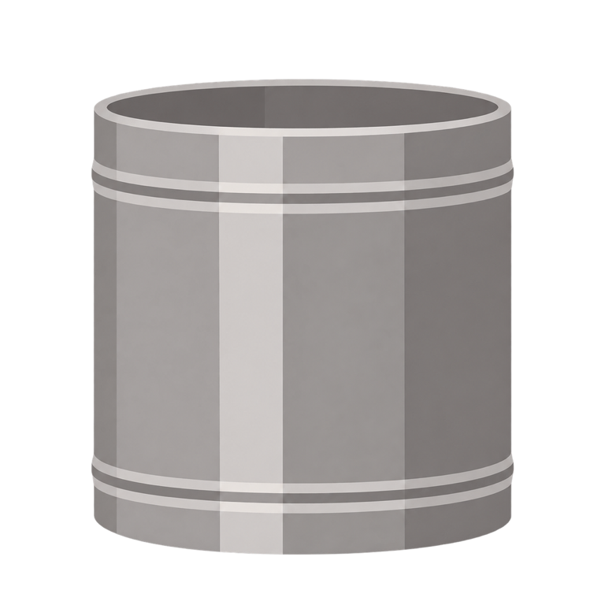

SEBI regulated
Every fund on Rupyon follows the rules SEBI sets for mutual funds in India.



 ₹1,500
₹1,500Mutual fund investments are subject to market risks. Read all scheme related documents carefully.
Money she put aside days and months ago, there when the family needs it.
Daily, weekly or monthly, from ₹100. See what it adds up to.
Set it once with your UPI PIN. UPI AutoPay does the rest.
This counts only what you put in. The value of mutual funds can go up or down.
Every fund on Rupyon follows the rules SEBI sets for mutual funds in India.
A separate SEBI-registered custodian holds it. Not Rupyon, not the fund house.
Linked to your PAN and recorded with the registrar, not with us.
No lock-in. Pause, reduce or stop whenever you want.
Hard words turn simple, in eight languages.
Set it once, and it saves on its own.
Mutual fund investments are subject to market risks. Read all scheme related documents carefully.